Le débat fait rage actuellement sur l’intérêt ou non de limiter la consommation de données des utilisateurs web. Et derrière cette question, celle de la nécessité de passer ou non à la 5G, celle-ci amenant à des débits plus importants.
Les défenseurs d’une limitation argumentent que cela réduirait la consommation d’énergie et l’impact du numérique, les défenseurs pour la poursuite des évolutions technologiques (et généralement aussi de la non limitation de la bande passante) argumentent que l’amélioration constante des technologies compenserait les effets négatifs du numérique.
Comme dans tout débat, les deux parties ont des arguments valides. Tentons d’analyser en quoi la réponse n’est pas si simple !
Disclaimer : En tant que professionnel de l’IT et de la sobriété numérique, notre objectif est de fournir des données claires et factuelles sur l’impact du numérique et son évolution. Le numérique sert à aider la société sur d’autres domaines mais ce n’est pas une raison pour ne pas optimiser et réduire l’impact du numérique. Plusieurs études montrent qu’il est nécessaire d’agir, sans quoi la tendance pourrait être encore plus néfaste.
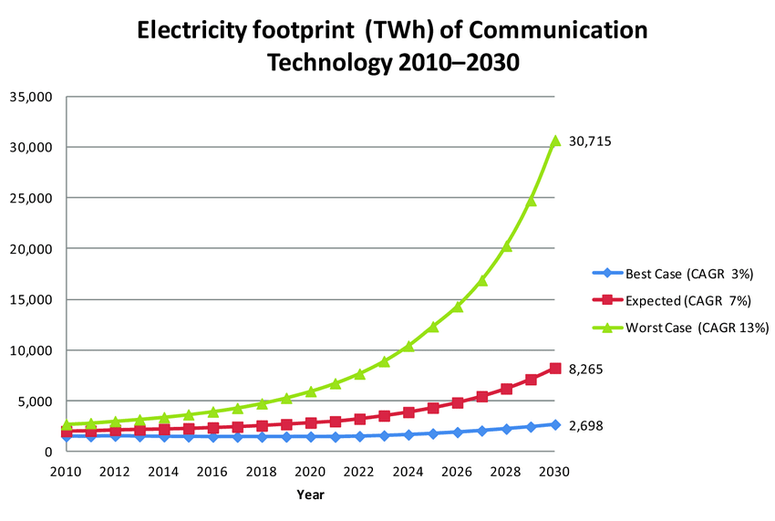
La question n’est pas de savoir si telle ou telle projection est bonne mais comment agir pour être dans le meilleur des cas.
1. Amélioration des datacenters
Il est prouvé que l’efficacité globale des infrastructures s’est améliorée ces dernières années.
L’étude IEA a été reprise de nombreuses fois sur les réseaux en argumentant que la consommation d’énergie des centre de données est faible et s’est améliorée énormément ce qui a permis d’absorber l’augmentation du trafic.
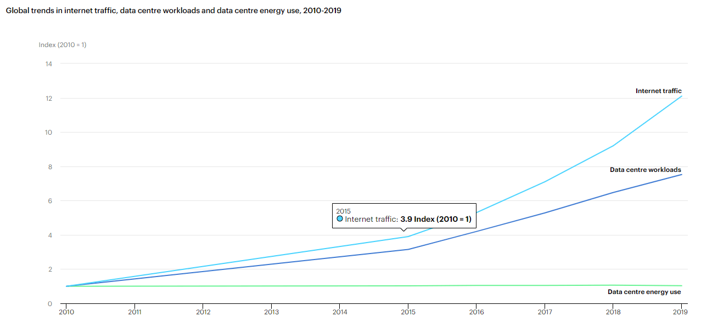
Il y a en effet eu énormément d’amélioration de l’efficacité par différentes actions : consolidation et virtualisation, amélioration des flux d’air… Les coûts énergétiques étant fixes, la consommation d’énergie et aussi l’impact de ces infrastructures n’ont pas augmenté.
Une nouvelle étude confirme cette tendance à l’amélioration mais montre aussi l’augmentation importante en termes de consommation d’énergie qui s’est produit avant 2010 (la fenêtre utilisée par l’IEA) : augmentation de 4% entre 2010 et 2014 mais après une augmentation de 24% les 5 années précédentes et 90% entre 2000 et 2005.
On peut voir aussi cela sur le cas des US :
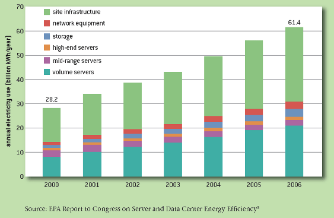
On peut cependant moduler ce constat car on partait de loin : plus de serveur physique, aucune gestion des flux… Le plus gros des gains a donc été fait ces dernières années. L’amélioration de la capacité ne va pas aller au même rythme et il va certainement y avoir une augmentation nécessaire de la capacité des Datas center. Un exemple, la stagnation du PUE :
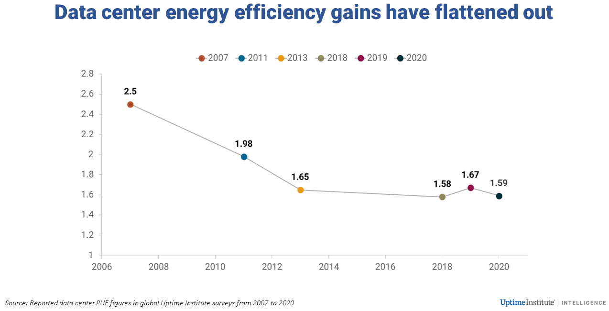
Les opérateurs le prennent même en compte via une diminution du rythme d’optimisation plus faible.
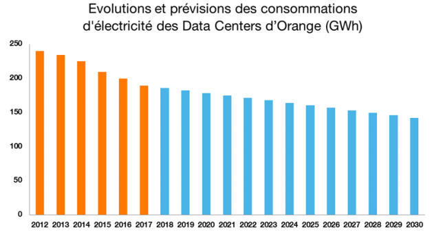
Les projections des études scientifiques montrent des explosions de la consommation des Data center. Même si elles se basent sur des projections qui peuvent être discutées, l’augmentation est bien présente :
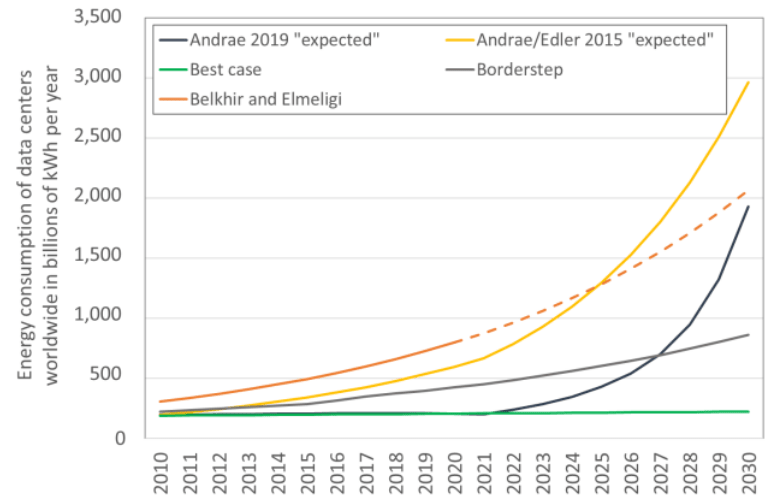
Au final, on peut effectivement dire qu’il y a eu beaucoup d’améliorations mais on a tout à fait le droit de se poser des questions sur certains éléments :
- À quel coût CO2 s’est faite cette amélioration ? En effet, la construction de nouveaux Data center et le remplacement des anciens par de nouveaux serveurs plus efficients a eu un coût en termes de fabrication. Les études n’en parlent pas
- Il n’y a aucune métrique sur l’efficience des traitements. Quelle est l’évolution de coût côté Data center de l’affichage d’une page web, d’un traitement… ?
- Ces courbes sont à mettre en face de la consommation de bout en bout (jusqu’à l’utilisateur). C’est ce que nous allons tenter de faire en partie dans la suite de l’article.
2. Amélioration des réseaux
Il en va de même pour les infrastructures réseaux. Le ratio kWh/Go a largement diminué. Exemple du cas sur le réseau en Finlande.
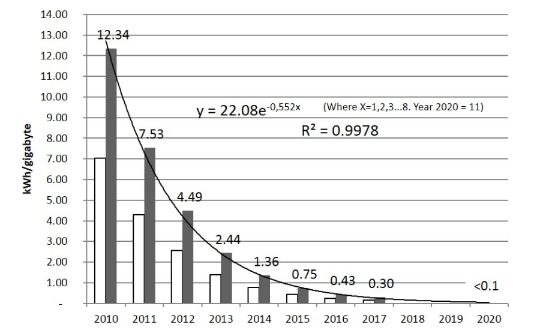
Il existe des critiques cependant sur ce mode de présentation de l’efficience (les Wh/Go) car la consommation de ces infrastructures est fixe. Consommer plus de données sur le réseau serait gratuit. C’est faux car, pour piloter l’efficience, cette métrique est utile en permettant d’affecter cette consommation à un usage. Et effectivement, plus on va consommer, plus cette métrique va diminuer. Deux conclusions s’imposent sur la base de cette analyse :
1/ Oui l’efficience du réseau s’améliore
2/ Oui, plus on utilise le réseau, plus on « rentabilise » la consommation fixe et les impacts environnementaux du matériel.
Cependant cela pose le problème de la capacité du réseau. Lorsque le réseau est saturé, il est nécessaire d’ajouter des infrastructures. C’est ce qui se passe actuellement sur le réseau 4G. A certaines heures et dans certains lieux, les utilisateurs sont redirigés vers les réseaux 3G. La solution choisie est donc de passer à une autre génération de réseau qui va permettre d’absorber cette charge.
Donc au final si l’efficience du réseau est vraie, elle ne doit pas être la seule métrique pour analyser le problème. Il est nécessaire de prendre aussi le paramètre de la capacité du réseau (mais aussi de la capacité de chaque réseau unitaire). Car sans cela le bénéfice de l’amélioration de l’efficacité des réseaux est annulé par l’impact du renouvellement trop fréquent de l’infrastructure du réseau.
« Comme nous recherchons un ordre de grandeur en économie d’énergie, nous supposons que la diminution de 30% du volume de trafic dans le cœur de réseau induit une diminution du même ratio dans le dimensionnement du réseau et par conséquent une diminution de 30% de la consommation d’énergie dans le cœur du réseau IP. »
Vous pouvez trouver ce raisonnement entre autres dans le projet de recherche Européen CONVINcE sur lequel Greenspector a travaillé avec des acteurs de l’infra et de la vidéo.
« As we are looking for an order of magnitude in energysaving, we suppose thatdecreasing by 30% the traffic volume in the core network induces a decrease of same ratio in network dimensioning and consequently a decrease of 30% in energyconsumption in the core IP network. »
Quant à l’impact environnemental du réseau, de la même manière que pour l’étude IEA, une courbe d’une étude ARCEP a été utilisée de nombreuses fois :
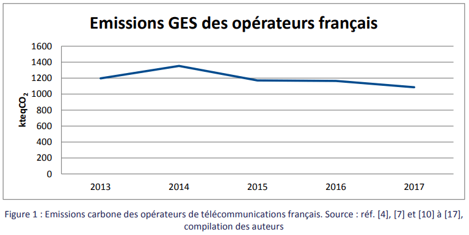
C’est positif mais encore une fois, il manque certaines données pour bien analyser cette tendance et surtout elle ne prend pas en compte la tendance où une partie de l’impact environnemental est passée chez l’utilisateur avec l’usage des box internet.
Car, comme on le verra plus loin, on observe un déplacement des traitements informatiques vers les utilisateurs.
3. Amélioration des terminaux
De la même manière, les terminaux (PC, Smartphone, TV…) améliorent leur efficacité énergétique. La loi de Koomey le démontre.
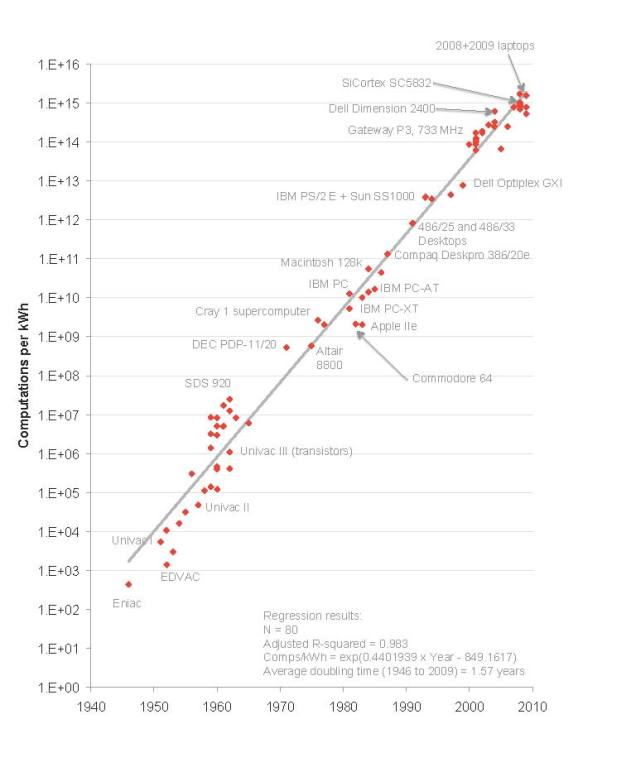
Cependant il y a un ralentissement notable (voir paragraphe suivant). Nous l’avons-nous-même constaté sur les smartphones sur la moyenne des sites que nous avons mesurés (6000 mesures depuis 2017). D’une part par ce ralentissement de l’efficience énergétique des processeurs mais aussi par une certaine lourdeur des logiciels. Un exemple dans l’évolution des benchs de processeur (qu’on peut aussi voir sur de nombreux autres types de bench).
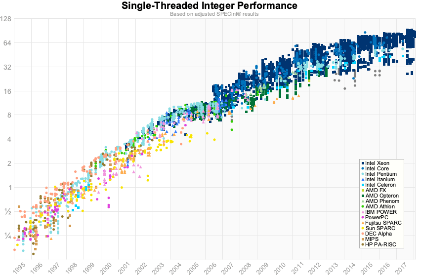
4. Limitation de l’amélioration de l’efficience
« En 2016, la société Intel mentionne un ralentissement du rythme de miniaturisation des processeurs et, en conséquence, un écart à la loi de Moore »
L’amélioration de l’efficience qui est formulée par Koomey a une limite. Elle est liée en partie au ralentissement de la loi de Moore.
« En 2016, la société Intel mentionne un ralentissement du rythme de miniaturisation des processeurs et, en conséquence, un écart à la loi de Moore » écrit le chercheur Jean-Gabriel Ganascia
Cette limitation est aussi formulée par la loi de Laudauer : il est impossible physiquement d’atteindre une certaine efficience. Nous avons encore relativement une marge mais la tendance au ralentissement est déjà visible. Les tendances annoncées par les opérateurs de Data center (voir plus haut) le montrent bien.
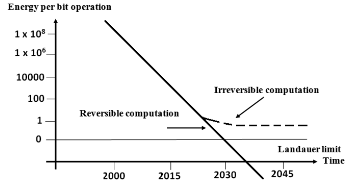
On voit déjà des limites sur certains composants :
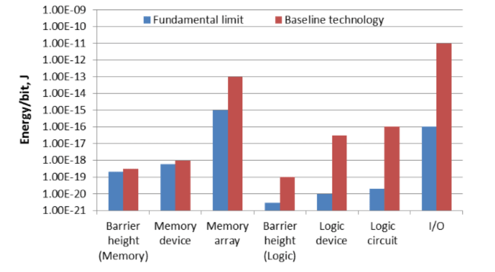
Cette même étude (issue de l’industrie des semi-conducteurs) annonce une explosion de la consommation d’énergie et une nécessité de continuer cette recherche d’efficience. On le voit cependant même avec cette efficience, la consommation totale due à l’informatique sera relativement importante par rapport à la production d’énergie mondiale. Discours différents par rapport aux personnes qui annoncent une consommation nulle de l’informatique !
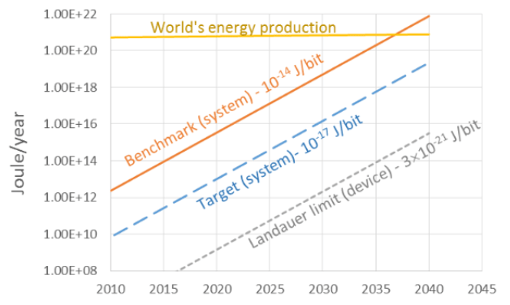
L’approche optimiste est de dire que la R&D permettra de trouver des nouvelles approches. Cependant, à quel coût ? Et cela n’empêche pas de réfléchir à rentabiliser les technologies actuelles pour gérer ce futur plateau.
5. Technologie logicielle
« Les programmes ralentissent plus vite que le matériel accélère »
L’évolution de la technologie logicielle n’est pas souvent prise en compte dans les approches d’évaluation et de prospection. Le matériel étant le consommateur de ressource. Cependant le lien est faible entre les deux.
Le logiciel ne suit généralement pas l’évolution du matériel, ou en tout cas, il le suit moins rapidement. C’est ce qu’énonce la loi de Wirth.
On peut le voir sur de nombreuses métriques des logiciels, sur des mesures empiriques mais il existe cependant peu d’étude qui démontre cette loi. Si on prend l’évolution de la taille des pages web ainsi que de la performance depuis 10 ans :
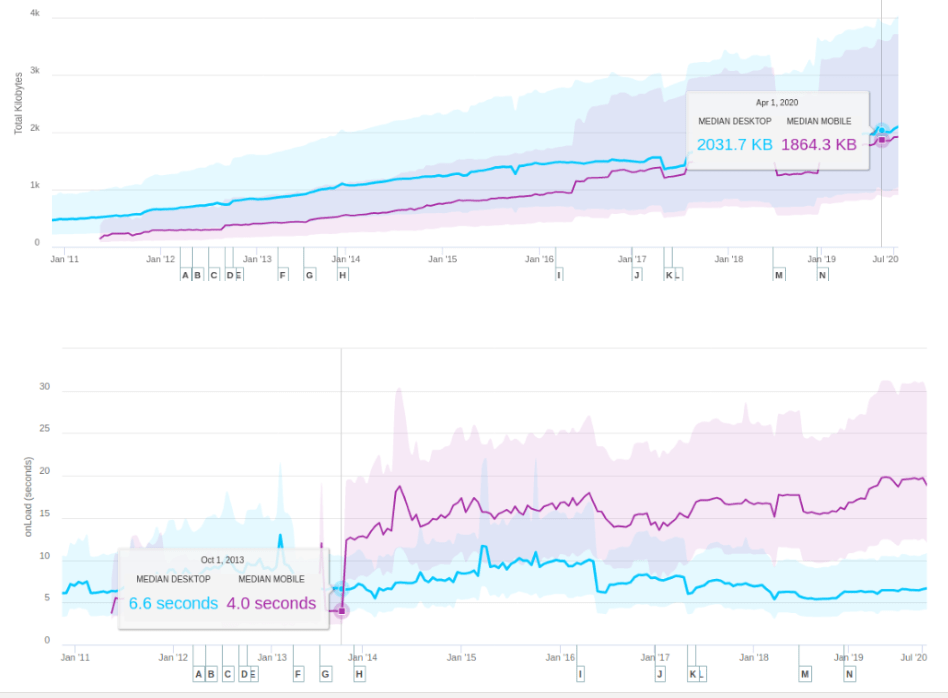
Il y a effectivement une tendance à la surcharge. Tendance qu’on pourrait atténuer par rapport à l’amélioration du réseau cité plus haut. Pour calculer l’efficience, nous allons prendre le ratio d’énergie consommée pour transporter 1Mo de data. Nous allons aussi comparer ce ratio avec l’hypothèse de la médiane des pages des sites qui serait restée stable en volume de données par rapport à 2011 (soit 200Ko). Sachant que 200k est assez réaliste pour un site complet et utilisable. On peut même aller plus loin : voir le challenge 10k. On obtient alors :
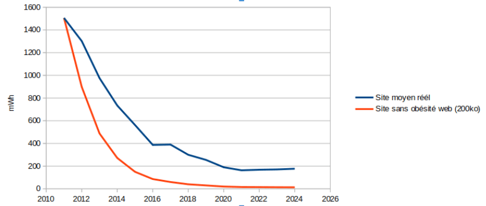
L’efficience réelle (matériel + logiciel) ne suit pas l’efficience du matériel. Si les tendances se poursuivent (>2020) alors on pourrait même avoir une efficience énergétique qui commence à se dégrader.
En prenant la performance des processeurs vu plus haut (Single Threaded Integer Performance), l’évolution du chargement des pages web, et en considérant que la performance des pages web reste à 5 secondes en moyenne), les conclusions sont les mêmes : l’efficience est constante.
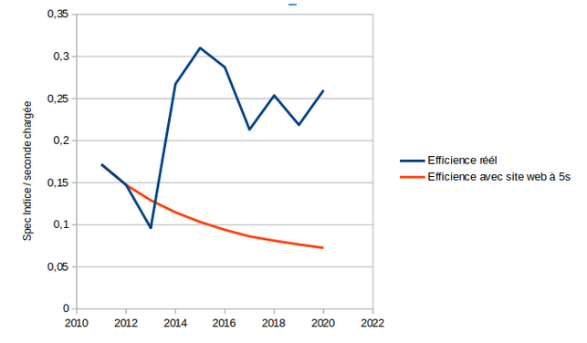
Ces analyses sont partielles, il serait nécessaire de prendre des indicateurs plus adaptés mais cela montre en partie que l’amélioration de l’efficience n’est pas si claire.
La loi de Wirth semble confirmée dans de nombreux cas. Dans certains domaines spécifiques comme le calcul scientifique, la performance des traitements est proche du matériel, cependant dans de nombreux logiciels, on observe un écart. Une des raisons est bien souvent la non-prise en compte de la plateforme matériel lors du développement et le paradigme que les bytes n’ont pas d’impact. C’est faux ! Par exemple, la tendance du web a été d’utiliser énormément de JavaScript pour afficher les pages web. Or ces bytes transférées ont une part importante dans le poids des pages mais aussi dans l’efficience des traitements côté utilisateur. Le JavaScript devient en effet un des goulots d’étranglement de la performance sur mobile. Les CPU même si surpuissant, passent leur temps à charger, parser et exécuter le JavaScript.
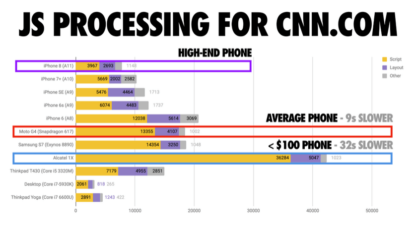
Ce phénomène est très bien expliqué dans l’article The Cost of Javascript. Le résultat est une explosion de l’énergie par un usage intensif de cycle CPU ainsi qu’un ralentissement des performances et un sentiment d’obsolescence de la plateforme par l’utilisateur.
Effet rebond
Nous ne traiterons pas ici de l’effet rebond en termes d’usage. C’est un aspect en effet très discuté qui prend en compte du social, des analyses prospectives… Cependant nous pouvons, d’un point de vue technique, observer un effet rebond issu de l’amélioration des technologies : celle de l’ajout d’informations annexes aux services qui sont purement nécessaire à l’utilisateur. Par exemple, on peut citer : l’ajout de services annexes tels que la publicité, les trackers…
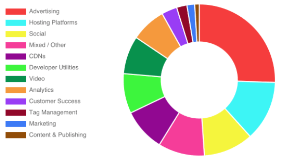
La part de JavaScript pris par les services “annexes” est importante et dépasse celle du JavaScript utilisé pour le service primaire. Ceci a été rendu possible, entre autres, par certaines capacités techniques : intégration de script facilitée, bande passante le permettant…
Et alors ?
Afin de prendre les bonnes décisions, il est important de prendre du recul et surtout de regarder les tendances. Il est clair que ces dernières années en informatique ont vu arriver une amélioration notable des infrastructures matérielles, des Data center aux terminaux. Cela a permis de nouveaux usages mais aussi de nouvelles pratiques de développement. La frénésie de développement de solution ne s’est pas forcément accompagnée d’une optimisation, les technologies, offrant de génération en génération plus de puissance, plus de bande passante, l’optimisation semblait pour certains un surcoût inutile. Cette optimisation s’est cependant faite dans beaucoup de cas pour des raisons économiques : réduire la facture électrique du Data center, optimiser l’usage d’une infrastructure réseau. Cette optimisation n’a pas été systémique mais plutôt unitaire, au détriment souvent de certaines parties comme les terminaux.
Cela a amené un retard entre l’efficience réelle des plateformes et leurs capacités. L’affichage des sites en 5 secondes avec 8 CPU et de la 4G sur des téléphones en est l’exemple. Ce n’est qu’une accélération de la loi de Wirth en fait. Les plus optimistes et je dirais technophiles ont comme position que les évolutions technologiques, associées à des meilleurs outils logiciels permettront de garder une performance suffisante. Cela pourrait être une solution cependant elle a des contreparties : elle va dans le sens d’un renouvellement assez rapide des plateformes, en particulier, côté utilisateur, et donc d’un impact environnemental plus important. Elle ne va pas de plus dans le sens de pratiques vertueuses : les tailles des sites et des logiciels vont continuer de grossir. La performance sera constante voire améliorée sur les nouvelles plateformes et cela exclura les utilisateurs qui veulent garder des anciennes plateformes. A moins de le gérer dans les logiciels (comme par exemple l’apparition de version lite), approche peu probable car coûteuse et applicable uniquement par les Big Tech. L’approche optimiste se base sur des évolutions technologiques futures. Or on le voit avec la loi de Laudaeur, il y a une limite. Nous avons encore peut-être quelques années, mais la dette grandit.
Dans ce cadre, la 5G ne va pas forcément dans le bon sens car elle va permettre de charger plus de données, plus rapidement et donc de ne pas avoir à optimiser les logiciels et même de rajouter des services tiers. Il est pourtant clair que la 5G a des avantages technologiques qui permettraient en partie d’améliorer l’efficience du système global. Mais sans garde-fou, nous allons continuer comme nous l’avons toujours fait avec les différentes technologies : toujours plus sans penser à l’optimisation.
Dans ce cadre, la mise en place d’incitation ou de contrainte est nécessaire pour freiner cette course à l’armement. La limitation de la bande passante est une approche intéressante car elle va permettre d’avoir un budget data qui pourrait être répartie. En limitant la taille des sites web par exemple, il sera nécessaire d’optimiser des choses : optimisation technique des librairies, suppression de services tiers, suppression du superflu… La limitation des données est dans ce cadre un axe qui permettra de limiter la consommation d’énergie (en particulier chez l’utilisateur) mais sera surtout un axe pour éviter une obsolescence des plateformes, et au final un axe pour maitriser, voire réduire l’impact du numérique.
Nous travaillons depuis longtemps avec certains de nos clients dans le sens de l’optimisation en leur offrant des moyens de mesure et d’amélioration sur la réduction de la consommation d’énergie mais aussi de données, de traitement CPU… Cependant la résistance au changement des organisations, l’état de l’art et les pratiques du développement logiciel, les priorisations business… font que ces optimisations ne seront à long terme pas suffisantes pour rattraper le retard que l’on prend au niveau global de l’industrie IT. Les acteurs engagés sont des précurseurs, cependant pour que tout le secteur s’améliore réellement, la contrainte semble inévitable…à moins que la prise de conscience et le passage à l’action arrivent demain !